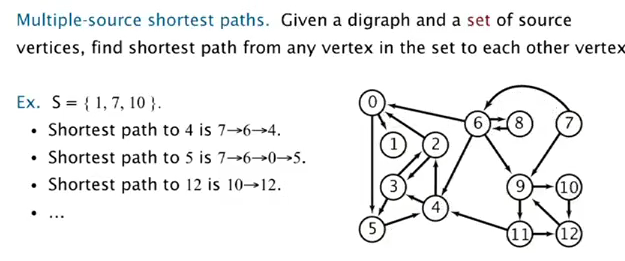
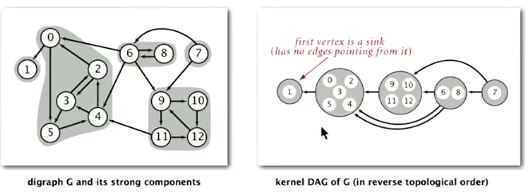
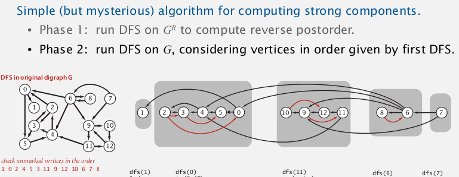

1. Intro to digraphs
Has profound differences wrt undirected graphs.
def: digraph
edges: have directions
vertex: distinguish indeg and outdeg
digraph pbs:
- path/shortest path
- topological sort: Can you draw a digraph so that all edges point upwards?
- strong connectivity: Is there a directed path between all pairs of vertices?
- transit closure
- PageRank
2. Digraph API
public class Digraph{
Digraph(int V);
void addEdge(int v, int w);// edge is directed
Iterable<Interger> adj(int v);// vertices reached by outgoing edges
int V();
Digraph reverse();// <--new methode wrt undirected graph
}
representation: adj-list, ie. an array of bags.
Bag<Integer>[] adj;// prec vertices
3. Digraph Search
BFS and DFS can be applied to digraphs.
- reachability
find all vertices reachable from vertex-s.
use the same DFS as for undirected graphs.
→ application: programme control-flow analyse, garbage collection.
-
DFS is the basis for a lot of digraph pbs: 2-satisfiability, Euler path, strongly connected component.
-
multiple source shortest path:

⇒ use DFS but enque all vertices in the set.
→ application: web crawler(DFS not suitable for crawling)
4. Topological Sort
application. precedence schedule, java compiler (cycled inheritance), ...
def. topo-order
is a permutation of vertices, where for each vertice v→w, w is behind v in the permutation.
def. DAG
directed acyclic graph.
prop. for a digraph, topological order exists iff graph is a DAG.
algo: ⇒ use DFS~
reverse DFS postorder
def. postorder
is the order of the vertices that we have finished (ie. we have visited all reachable vertices from this vertex).
implementation
这个以前的blog写过...
private boolean[] visited;
private Stack<Integer> revPostorder;// stores the vertices in reverse post order
private void dfs(Digraph G, int v){
visited[v] = true;
for(int w: G.adj(v))
if(!visited[w])
dfs(G, w);
//** now we know the vertex v is "finished" **
revPostorder.push(v);
}
public Iterable<Integer> topoOrder(Digraph G){
for(int v=0;v<G.V();v++)
if(!visited(v)) dfs(G,v);// visit all cc
return revPostorder;
}
proof
prop. reverse post-order of a DAG is in topological order.
(这个证明蛮精彩)
pf.
for any edge v→w, when dfs(v) is called:
- case 1:
dfs(w)is called and returned, so w is done before v in post-order; - case 2:
dfs(w)is not called, it will be (in)directly get called bydfs(v), sodfs(w)finishes beforedfs(v); - case 3:
dfs(w)is called but NOT returned (ie, w not finished) → exist path from w to v ⇒ graph is not a DAG! (cycle detection)
5. Strong Components
For undirected graphs: connected components can be solved with dfs or UF.
def. Strongly-connected
v and w are strongly-connected if exist path from v to w and w to v.
→ is an equivalent relation.
def. Strong Component
subset of V where each pair are strongly-connected.
Goal: compute all strong components(scc) in a digraph.
linear time DFS solution: Tarjan (1972)
(developed version: a two-pass linear-time algorithm)
Intuition: scc for G is the same for G.reverse().
Kernel DAG: contract each scc into a single vertex.

Idea:
- compute topological-order in the kernel DAG.
- run DFS, consider vertices in reverse-topo-order
[Algo]
1. compute topo-order inG.reverse(just a DFS in the reversed graph)
2. run DFS in originalG, visit unmarked vertices in topo-order of G.reverse. (instead of visiting vertices by their index)
⇒ each time we finish a dfs from a vertex, we get a scc!
太精彩了!!!

proof: tricky, cf book...(貌似Werner课上讲过..)
implementation
private int[] scc = new int[V]; // scc[v] is the index of the SCC that v belongs to
private int sccCount = 0;
private boolean[] visited = new boolean[V];
public getSCC(Digraph G){
// 1. get topo-order in reverse graph
Iterable<Integer> topoOrderGR = topoOrder(G.reverse());
// 2. run dfs in original graph, run on vertices using the above topo-order
for(int v:topoOrderGR)// <-- only difference from the standard topo-order algo
if(!visited[v])
dfs(G, v, sccCount++);//increment sccCount everytime we done a component
}
private dfs(Digraph G, int v){
// run dfs from v, and all touched vertices are marked in sccId's SCC
visited[v] = true;
scc[v] = sccCount;
for(int w:G.adj(v))
if(!visited[w]){
scc[w] = sccCount;
dfs(G,w);
}
}
Part 2 of series «Algorithms Princeton MOOC II»：
- [Algorithms II] Week 1-1 Undirected Graphs
- [Algorithms II] Week 1-2 Directed Graphs
- [Algorithms II] Week 2-1 Minimum Spanning Trees
- [Algorithms II] Week 2-2 Shortest Paths
- [Algorithms II] Week 3-1 Maximum Flow
- [Algorithms II] Week 3-2 Radix Sorts
- [Algorithms II] Week 4-1 Tries
- [Algorithms II] Week 4-2 Substring Search
- [Algorithms II] Week 5-1 Regular Expressions
- [Algorithms II] Week 5-2 Data Compression
- [Algorithms II] Week 6-1 Reductions
- [Algorithms II] Week 6-2 Linear Programming
- [Algorithms II] Week 6-3 Intractability
Disqus 留言